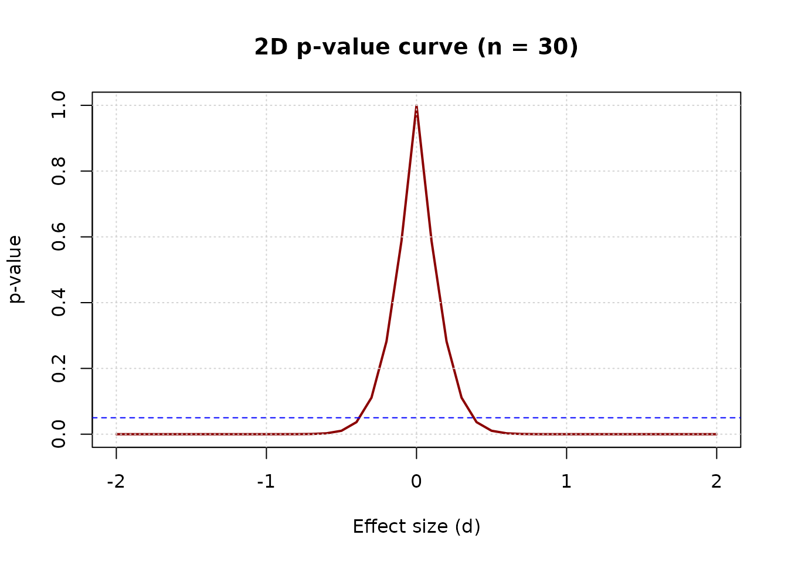

Introduction
Existing R packages such as pvaluefunctions and
concurve visualize p-values in two
dimensions. They show how the p-value changes with one
parameter at a time, typically the effect size, given a fixed
standard error.
The p3d package extends this to three dimensions, showing the p-value as a function of both effect size and sample size.
This vignette compares the two approaches.
Setup
We will compare a 2D p-value curve (from
pvaluefunctions) with a 3D p-value surface (from
p3d), using the same scenario:
- Observed effect size: d = 0.5
- Sample size: n = 30
2D p-value curve
The pvaluefunctions package visualizes the p-value as a
function of a single parameter. First, we need to install it:
install.packages("pvaluefunctions")Now we compute the 2D curve:
library(pvaluefunctions)
conf_dist(
estimate = 0.5,
stderr = 1 / sqrt(30),
df = 29,
tstat = 0.5 * sqrt(30),
type = "ttest",
plot_type = "p_val"
)The resulting plot shows the p-value as a function of the estimated effect size, with the observed effect size (0.5) in the center. The curve is symmetric and has a minimum at the observed effect size.
3D p-value surface
The p3d package visualizes the p-value as a function of
both effect size and sample size:
surface <- p_surface(
d = seq(-2, 2, 0.1),
n = seq(5, 200, 5)
)
plot_p_static(surface)
The 3D surface reveals structure that the 2D curve cannot:
- The p-value is not symmetric in n. As n increases, the surface flattens toward zero for large |d| and toward one near d = 0.
- The significance boundary is a curve, not a point. For each n, there is a critical effect size d_crit(n) above which the p-value falls below 0.05.
- Sample size moderates the effect of d. At small n, only large effects are significant. At large n, even small effects become significant.
Comparing the two views
Let’s place the 2D curve and the 3D surface side by side. The 2D curve corresponds to a slice of the 3D surface at n = 30:
# 2D curve at n = 30
curve_30 <- p_curve_2d(d = seq(-2, 2, 0.1), n = 30)
# Plot the 2D curve
plot(curve_30$d, curve_30$p, type = "l", lwd = 2, col = "darkred",
xlab = "Effect size (d)", ylab = "p-value",
main = "2D p-value curve (n = 30)")
abline(h = 0.05, col = "blue", lty = 2)
grid()
This 2D curve is mathematically equivalent to the slice of the 3D surface at n = 30. Both give the same p-value at d = 0.5:
curve_30$p[curve_30$d == 0.5]
#> [1] 0.01043739
surface$p[surface$d == 0.5, surface$n == 30]
#> [1] 0.01043739What the 2D curve misses
The 2D curve hides the moderating effect of sample size. Consider the same effect size (d = 0.5) at three different sample sizes:
surface$p[surface$d == 0.5, surface$n == 10]
#> [1] 0.1483047
surface$p[surface$d == 0.5, surface$n == 30]
#> [1] 0.01043739
surface$p[surface$d == 0.5, surface$n == 100]
#> [1] 2.481396e-06At n = 10, the p-value is above 0.05 (not significant). At n = 30, it is below 0.05 (significant). At n = 100, it is far below 0.05 (highly significant).
This is the moderating effect of sample size. The same effect size produces different conclusions depending on n. The 2D curve cannot show this — it is fixed at one n.
Jensen’s inequality: two interpretations of the p-value
The p-value has two different interpretations, which the 3D surface helps clarify.
Conditional p-value (fixed d): the p-value
computed for a specific effect size. This is what
p_surface() returns:
For d = 0.5, n = 30:
p_surface(d = 0.5, n = 30)$p[1, 1]
#> [1] 0.01043739Expected p-value (random d): the average p-value over all possible observed effect sizes:
For d = 0.5, n = 30, this is approximately:
set.seed(42)
n_sim <- 10000
n <- 30
d <- 0.5
p_values <- replicate(n_sim, {
x <- rnorm(n, mean = d, sd = 1)
t.test(x, mu = 0)$p.value
})
mean(p_values)
#> [1] 0.05887669The two values differ substantially (0.0104 vs 0.0589). This is due to Jensen’s inequality: the p-value is a convex function of d, so the expected p-value is larger than the conditional p-value.
The p3d package visualizes the
conditional p-value, consistent with power analysis and
existing packages. The expected p-value is a subject of
ongoing research.
Conclusion
The 2D and 3D visualizations of the p-value are complementary:
- 2D: Ideal for examining a single scenario in detail
- 3D: Ideal for exploring the full parameter space
The 3D surface reveals structure that the 2D curve cannot: the moderating effect of sample size, the continuous nature of the significance boundary, and the interaction between effect size and sample size.
By making these features visible, p3d helps weaken the dichotomous thinking that reduces the p-value to a binary decision.
References
Helske, J., Helske, S., Cooper, M., Ynnerman, A., & Besançon, L. (2021). Can Visualization Alleviate Dichotomous Thinking? Effects of Visual Representations on the Cliff Effect. IEEE Transactions on Visualization and Computer Graphics, 27(8), 3496-3509.
Infanger, D., & Schmidt-Trucksäss, A. (2019). P value functions: An underused method to present research results and to promote quantitative reasoning. Statistics in Medicine, 38(21), 4189-4197.